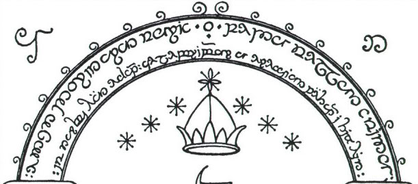

Tests failed due to JavaScript correctness errors. Check the browser’s developer console for details.
The following sections cover automated test results and manual proofs for reviewing the tengwar transcriber’s behaviors. Please carefully consider each section and make sure that the necessary tests are present and passing for the corresponding code changes.
The mode for general use has submodes for each of the rendered languages and slightly different behavior depending on the rendering font.
The classical mode applies for Quenya.
Ai! laurië lantar lassi súrinen,
Yéni únótimë ve rámar aldaron!
Yéni ve lintë yuldar avánier
mi oromardi lisse-miruvóreva
Andúnë pella, Vardo tellumar
nu luini yassen tintilar i eleni
ómaryo airetári-lírinen.Sí man i yulma nin enquantuva?
An sí Tintallë Varda Oiolossëo
ve fanyar máryat Elentári ortanë
ar ilyë tier undulávë lumbulë;
ar sindanóriello caita mornië
i falmalinnar imbë met, ar hísië
untúpa Calaciryo míri oialë.
Si vanwa ná, Rómello vanwa, Valimar!Namárië! Nai hiruvalyë Valimar.
Nai elyë hiruva. Namárië!
The mode of Beleriand uses tengwar for vowels and was used by the elves of Hollin (Eregion) who communicated with the dwarves of Moria.
In Dan Smith style fonts, the tehtar are zero-width characters that draw diacritics on the glyph behind them. Since the tengwar typically vary in width, Dan Smith fonts provide at least four variations on each tehtar, so they can be drawn different distances behind the cursor.
While in the theory of Dan Smith fonts it should be possible to use the same text for any of the Dan Smith fonts, in practice, ugly details emerge. The flowing script of the one ring, Tengwar Annatar, in particular, produces many pesky exceptions that the more regular fonts do not exhibit. The positions of the tehtar vary and, not every tehta can be rendered over every tengwa, forcing the transcriber to choose other variations of the tengwa or simply pass the tehta to a subsequent carrier.
The following tables provide a means for manually confirming that drivers for each font produce an aesthetically appropriate solution for each tehta and tengwa combination, or are simply greyed out if the combination is not sensible.